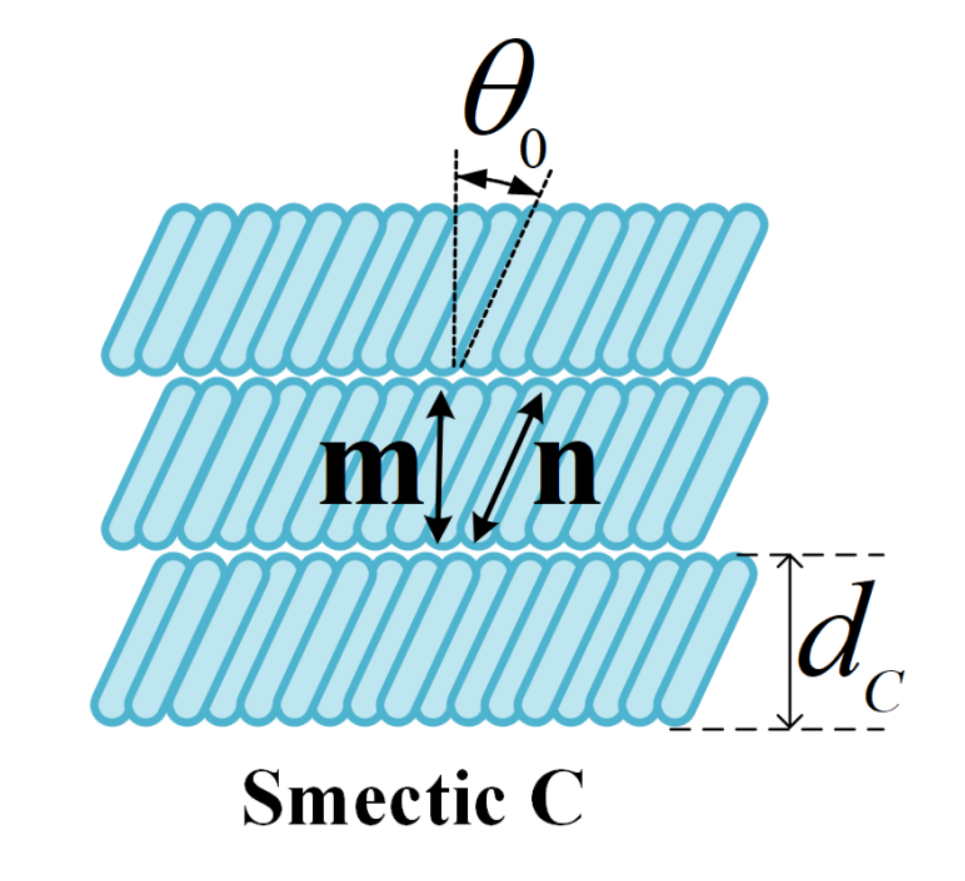

The Smectic C (SmC) phase represents a fascinating area within the study of liquid crystals, characterized by its unique tilted molecular arrangement and distinct optical and electro-optical properties. With molecules organized in a configuration tilted relative to the layer normal, SmC materials exhibit inherent chirality, resulting in intriguing optical phenomena such as optical rotation and polarization effects. This responsiveness to external stimuli, including electric and magnetic fields, opens up numerous scientific, industrial, and technological applications. This review explores the fundamental characteristics of SmC phases, shedding light on their nature and potential applications through a comprehensive approach involving experimental characterization, theoretical modeling, and computational simulation.
Molecular Structure and Organization
Central to SmC phases are mesogenic molecules, elongated and anisotropic, favoring self-organization. These molecules align in a tilted configuration within the layers, with a combination of van der Waals interactions, steric hindrance, and dipole forces governing their arrangement. Chirality, a defining feature of SmC phases, results from the presence of chiral centers in mesogenic molecules, leading to optical phenomena such as optical rotation and circular dichroism. This asymmetry and its resulting optical properties are crucial for applications like chiral sensors, optical filters, and chiral photonics.
Furthermore, SmC phases are highly responsive to external stimuli. Electric fields can reorient mesogens within SmC layers, allowing for precise modulation of optical properties. Magnetic fields induce responses from magnetically anisotropic mesogens, paving the way for magneto-optical devices and information storage systems.

Optical and Electro-optical Properties
The study "Electro-optics of Smectic Liquid Crystals" by Lagerwall and Scalia (2012) delves into the complex dynamics of optics in SmC phases. They detail how external factors like field strength, frequency, and temperature influence the optical response of SmC materials. Higher field strengths enhance molecular rearrangement, leading to significant changes in optical properties, while different frequencies induce varied responses from liquid crystal molecules. Temperature changes also affect molecular dynamics, providing insights into the temperature-dependent behavior of SmC materials.
Physical and Chemical Properties
SmC phases are characterized by their unique layered structure, with rod-shaped molecules arranged in tilted layers. This anisotropic arrangement results in different physical properties along different axes. SmC materials exhibit long-range orientational order and short-range positional disorder, characteristic of liquid crystalline states. These phases are responsive to external stimuli such as electric fields and temperature changes, which can induce molecular reorientation and phase transitions.
Chemically, SmC phases can be tailored through molecular design to exhibit specific properties for various applications. Functional groups and additives can enhance electrical conductivity or optical response, broadening the scope of potential uses in materials science and engineering.
Applications of Smectic C
SmC phases find versatile applications across various fields due to their unique physical and chemical properties. In display technology, SmC materials are essential for liquid crystal displays (LCDs), enabling high-resolution images with low power consumption. In photonics, SmC phases are used in devices like spatial light modulators and tunable filters, leveraging their electro-optical properties for signal processing and manipulation. Additionally, the sensitivity of SmC phases to external stimuli makes them suitable for sensors and actuators in diverse applications.
Innovations in materials design and synthesis continue to expand the applicability of SmC phases. Customization through molecular engineering allows for tailored properties to meet specific requirements, while functionalization with additives or nanoparticles enhances performance, opening new possibilities in materials science.
Conclusion
In conclusion, the study of Smectic C (SmC) phases reveals a captivating realm of liquid crystals with a wide range of applications. Understanding the mechanisms and properties of SmC phases advances science and technology, providing valuable insights into their behavior and potential uses. Continued research into the complexities of SmC phases is expected to yield groundbreaking discoveries, shaping the future of materials science and engineering.